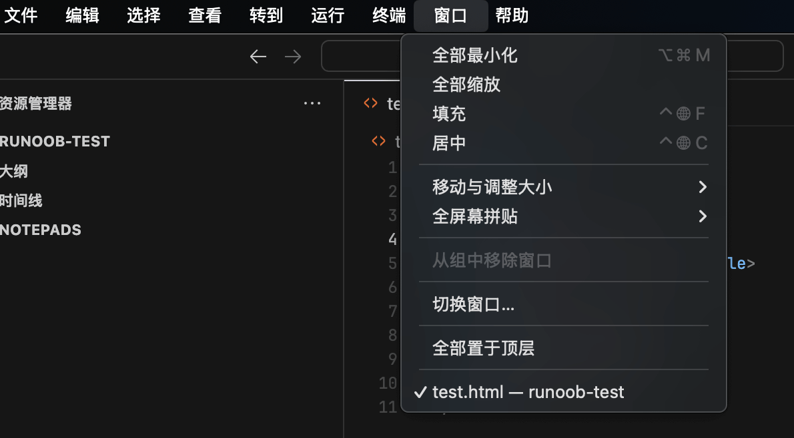
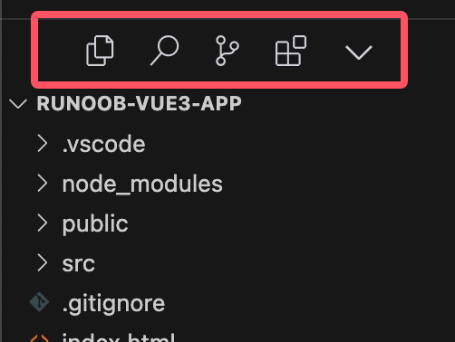
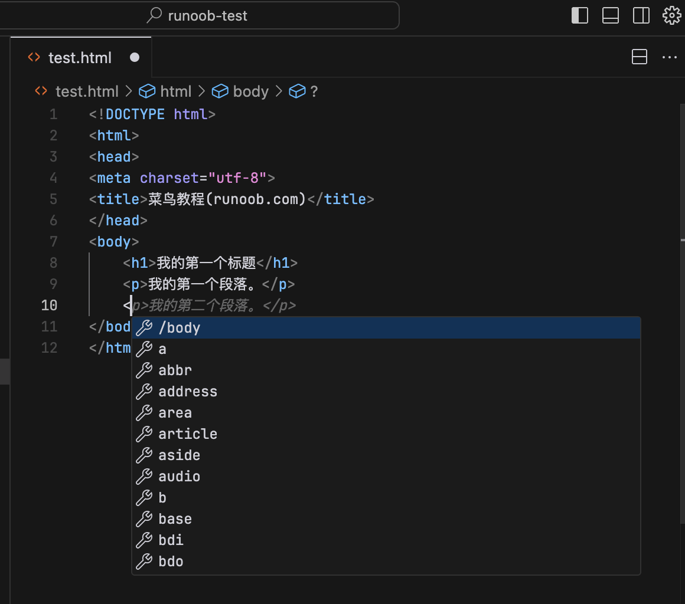
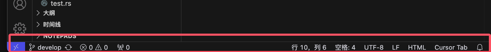

Cursor Interface Introduction
Cursor editor is a powerful and user-friendly code editor, especially suitable for beginners and intermediate developers.
This article will introduce the Cursor editor's interface in detail, helping you quickly get started and make full use of its features.
1. Main Interface Overview
The main interface of Cursor editor is simple and intuitive, mainly consisting of the following parts:
- Menu Bar: Located at the top of the window, it contains menu items such as File, Edit, View, Run, Tools, and Help.
- Sidebar: Located on the left side of the window, it typically displays functions such as project file structure, search, and version control.
- Editing Area: Located in the center of the window, it is the main area for writing and editing code.

2. Detailed Explanation of the Menu Bar
2.1 File Menu
- New File: Create a new code file.
- Open a File: Open an existing code file.
- Save File: Save the currently edited file.
- Save As: Save the current file as a new file.
- Close a File: Close the currently opened file.

2.2 Edit Menu
Main Features:
- Undo: Undo the last editing operation.
- Redo: Redo the last undone operation.
- Cut: Cut the selected text.
- Copy: Copy the selected text.
- Paste: Paste the content from the clipboard.
- Search: Find specified text in the current file.
- replace: Find and replace specified text in the current file.

2.3 Window/View Menu
- Zoom In: Enlarge the font in the editing area.
- Zoom Out: Reduce the font in the editing area.
- Reset Zoom: Restore the font size of the editing area to the default value.
- Full Screen: Switch the editor to fullscreen mode.

2.4 Run Menu
Main Features:
- Run: Run the currently edited code.
- Debug: Start debug mode, execute code step by step, and view variable values.

2.4 View Menu
Main Features:
- Command Palette: Open the command palette.
- Appearance: Set the display and hiding of various appearance views.

3. Detailed Explanation of the Sidebar
The sidebar is an important part of Cursor editor, providing multiple functions:
- Command Palette: Open the command palette.
- Appearance: Display various function panels, such as the status bar.
- Edit Layout: Set the layout mode of the editor.
By default, Cursor's activity bar is placed horizontally, which is to save space and facilitate the integration of chat functionality.

If you prefer the traditional vertical activity bar, you can adjust it by following the steps below:
OpenCursor Settings。
Search and Findworkbench.activityBar.orientation, change its value tovertical。
Restart Cursor for it to take effect.

Change toverticalAfter restarting, the effect is:

4. Detailed Explanation of the Editing Area
The editing area is the main area for writing and editing code, with the following features:
- Syntax Highlighting: Highlight code with different colors according to the syntactic structure of the code, improving code readability.
- Autocomplete: While typing code, the editor automatically suggests possible code completion options, improving coding efficiency.
- Code Folding: Code blocks can be folded, making it convenient for users to view and edit large code files.
- Multi-cursor Editing: Supports editing at multiple cursor positions simultaneously, making batch code modifications convenient.

5. Detailed Explanation of the Status Bar
The status bar is located at the bottom of the window and displays status information of the current file, including:
- Line and Column Numbers: Display the line number and column number of the current cursor position.
- Encoding Format: Display the encoding format of the current file, such as UTF-8.
- File Type: Displays the type of the current file, such as Python, JavaScript, etc.
- Git Status: Display the Git status of the current file, such as Modified, Committed, etc.

other extensions